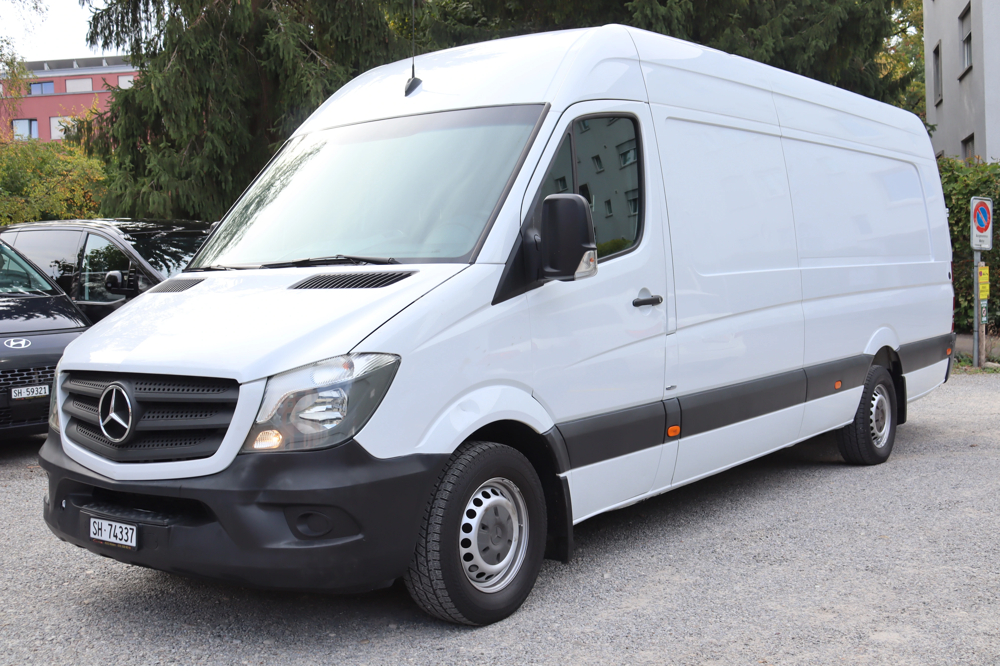
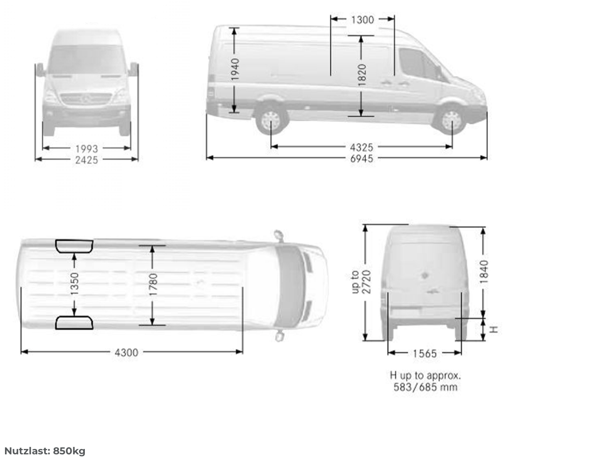

Stundentarif
CHF 80
für 3 Stunden
- Maximal 300 km inklusive
- Jede weitere Stunde: CHF 25
Mehr Länge für Ihren Transport: Der Mercedes Sprinter Extralang ist die passende Wahl, wenn ein kompakter Lieferwagen zu wenig Platz bietet. Mieten Sie Ihren extra langen Lieferwagen in Zürich-Kloten für Möbel, Umzüge oder gewerbliche Transporte.
Wählen Sie den Stunden- oder Tagestarif. Bei beiden Tarifen sind maximal 300 km inklusive.
für 3 Stunden
pro Tag
Ein extra langer Transporter für sperrige Ladung – entdecken Sie das Fahrzeug und seinen Laderaum in unserer Galerie.

Laderaum: 4,30 m lang, 1,78 m breit und 1,94 m hoch. Zwischen den Radkästen stehen 1,35 m Breite zur Verfügung. Nutzlast: 850 kg.
Jetzt buchenWenn es bei Ihrem Transport auf Länge und Platz ankommt, ist der Sprinter Extralang eine Alternative zum kleineren Lieferwagen.
Sofas, Schränke oder mehrere Möbelstücke: Planen Sie Ihren Umzug mit einem Lieferwagen, der Raum für sperrige Gegenstände bietet.
Für Bretter, Profile oder lange Verpackungen ist die nutzbare Laderaumlänge entscheidend. Teilen Sie uns Ihre Ladungsmasse vor der Reservierung mit.
Werkzeug, Material und Ausrüstung gemeinsam transportieren – für Einsätze, Lieferungen und Projekte im Raum Zürich.
Ob Messestand, Veranstaltungsmaterial oder Warenlieferung: Stimmen Sie Fahrzeug, Ladung und Strecke auf Ihren Transport ab.
Die Bilder zeigen den Laderaum mit Zugang über die Hecktüren und die seitliche Schiebetür. Für Ihre Planung zählt nicht nur das Volumen: Auch die Länge Ihrer Gegenstände, die Türöffnung und das Gewicht müssen passen.
Planen Sie Ihre Ladung mit den Abmessungen aus der Fahrzeugzeichnung.

Geben Sie Ihren gewünschten Mietzeitraum in der Lieferwagenbuchung an.
Fragen Sie gezielt nach dem Mercedes Sprinter Extralang und klären Sie Verfügbarkeit und Ladungsmasse.
Die Details zur Abholung und Rückgabe vereinbaren Sie bei der Buchung.
Ob Umzug, Möbeltransport oder Gewerbe: Prüfen Sie Ihren Miettermin oder lassen Sie sich zum Mercedes Sprinter Extralang beraten.
Alle Lieferwagen ansehenIhre Fragen zum Mercedes Sprinter Extralang und zur Miete eines extra langen Lieferwagens.